2. Activation
激活
From local heating to the probability of an event. Corresponding to Theory 02, source page 2.
从局部加热到事件发生概率。对应 Theory 02，原始材料第2页。
The source does not supply a thermodynamic nucleation-barrier model. Instead, it introduces an empirical, conditioned probability model. Its functional form can be explained mathematically, but its coefficients cannot be derived from energy conservation.
原始材料没有提供热力学成核势垒模型，而是引入了一个经验性的条件概率模型。可以从数学上解释其函数形式，但无法由能量守恒推导出其系数。
2.1 Why use a logistic model?
为什么使用逻辑概率模型？
Let be the probability of an event associated with one available droplet. A probability must satisfy
以 表示一个可参与激活的液滴发生事件的概率。概率必须满足
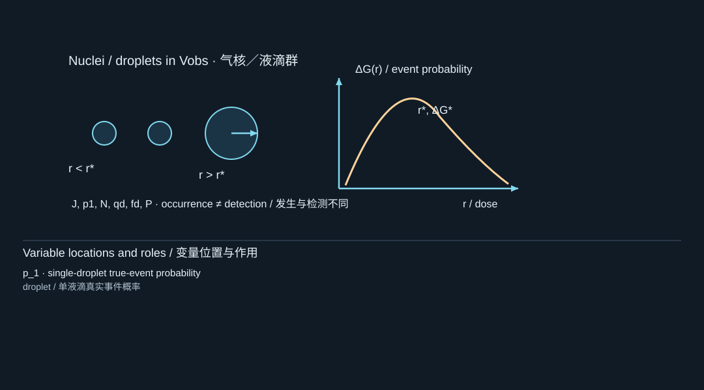
The diagram locates the physical system; its key lists the symbols in the formula. Read the definition in the surrounding derivation when a letter has different roles.
图示标出物理体系，图例列出公式中的符号。若某字母有多种作用，应以邻近推导中的定义为准。
A linear expression in dose and other variables does not automatically respect those bounds. The logistic construction instead makes the logarithm of the odds linear:
直接将剂量和其他变量线性相加，并不能自动满足这些取值范围。逻辑模型转而将优势比的对数设为线性形式：
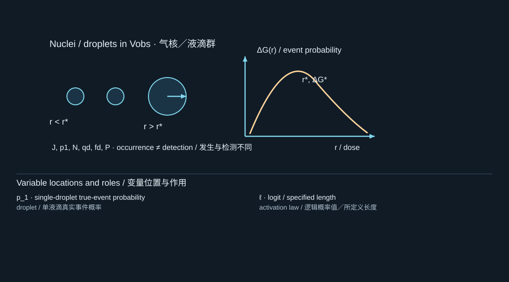
The diagram locates the physical system; its key lists the symbols in the formula. Read the definition in the surrounding derivation when a letter has different roles.
图示标出物理体系，图例列出公式中的符号。若某字母有多种作用，应以邻近推导中的定义为准。
Solving,
求解得到
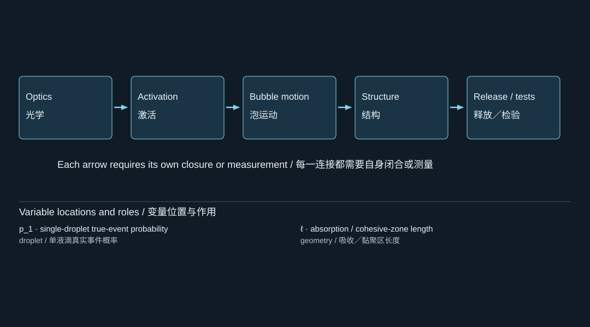
The diagram locates the physical system; its key lists the symbols in the formula. Read the definition in the surrounding derivation when a letter has different roles.
图示标出物理体系，图例列出公式中的符号。若某字母有多种作用，应以邻近推导中的定义为准。
The source writes the predictor in the form
原始材料将预测量写成如下形式：
![2.1 Why use a logistic model? / 为什么使用逻辑概率模型？; ℓ: logit / specified length; β_0: activation regression coefficient; b_batch: spatial profile / batch effect; β_D: activation regression coefficient; D_abs: absorbed dose per unit volume; D_ref: reference absorbed dose; β_Q: activation regression coefficient; q̇'''_max: peak volumetric deposition rate; q̇'''_ref: peak volumetric deposition rate; β_τ: activation regression coefficient; τ_L: laser pulse FWHM; τ_ref: duration / dimensionless time / dummy time; f_a: frequency / predictor / false detections; a_d: droplet radius / film span / acceleration; z_form: depth / formulation predictor; T: temperature / kinetic energy as defined; β_form: activation regression coefficient; z_det: depth / formulation predictor; β_det: activation regression coefficient; z_hist: depth / formulation predictor; β_hist: activation regression coefficient](../../assets/curriculum-figures/formula-084089d8c5625482.svg)
The diagram locates the physical system; its key lists the symbols in the formula. Read the definition in the surrounding derivation when a letter has different roles.
图示标出物理体系，图例列出公式中的符号。若某字母有多种作用，应以邻近推导中的定义为准。
Here denotes droplet size. The remaining terms account for formulation, batch, detector state, and pulse history. The reference quantities make logarithm arguments dimensionless. None of these coefficients is calibrated in the supplied theory pages. [S1, p. 2]
这里的 表示液滴尺寸。其余各项用于考虑配方、批次、探测器状态和脉冲历史。参考量的作用是使对数中的自变量无量纲化。所提供的理论页面中，这些系数均尚未标定。 [S1，第2页]
There is a useful algebraic subtlety. For the exact Gaussian pulse model above,
这里有一个值得注意的代数细节。对于前面给出的精确高斯脉冲模型，
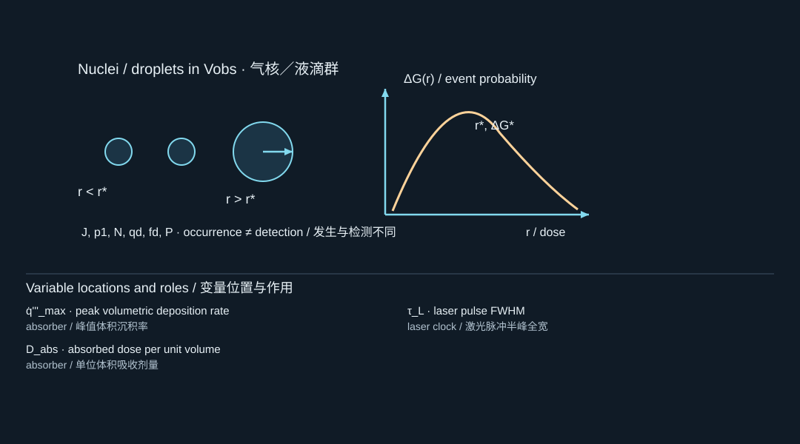
The diagram locates the physical system; its key lists the symbols in the formula. Read the definition in the surrounding derivation when a letter has different roles.
图示标出物理体系，图例列出公式中的符号。若某字母有多种作用，应以邻近推导中的定义为准。
Therefore dose, peak rate, and pulse width are not three independent predictors within that restricted pulse family. Their separate coefficients require an identifiable parameterization or additional experimental structure. This follows directly from the source equations; it is not a calibrated result.
因此，在这一受限的脉冲族中，剂量、峰值速率和脉宽并不是三个相互独立的预测量。要分别识别它们的系数，需要采用具有可辨识性的参数化方式，或提供额外的实验设计信息。这是由热源方程直接得到的结论，并非标定结果。
Also, because the slide includes detector-state covariates inside the logit, the fitted model should not automatically be interpreted as an intrinsic, detector-independent material law.
此外，由于原始页面将探测器状态协变量直接放入 logit 表达式中，因此不能自动将拟合得到的模型解释为独立于探测器的材料内禀规律。
2.2 From one droplet to many droplets
从单个液滴到液滴群体
Suppose there are available droplets, with independent events and equal probability .
假设有 个可参与激活的液滴，各液滴的事件彼此独立，且事件概率均为 。
For one droplet,
对于一个液滴，
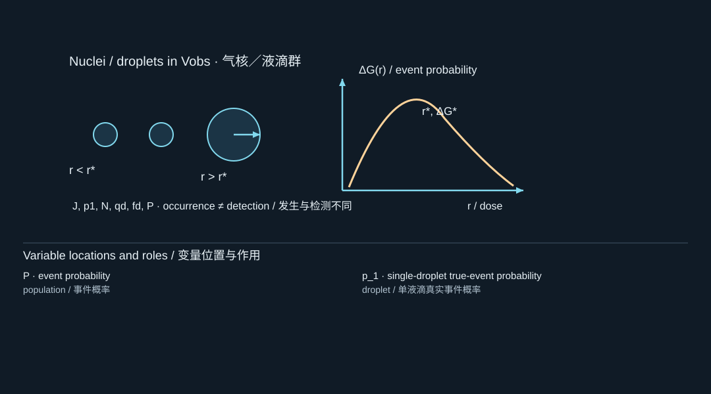
The diagram locates the physical system; its key lists the symbols in the formula. Read the definition in the surrounding derivation when a letter has different roles.
图示标出物理体系，图例列出公式中的符号。若某字母有多种作用，应以邻近推导中的定义为准。
Independence gives
由独立性可得
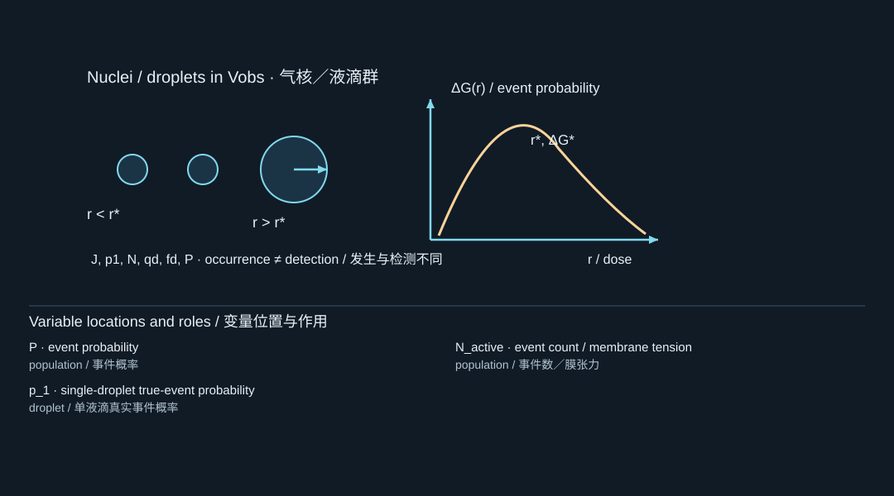
The diagram locates the physical system; its key lists the symbols in the formula. Read the definition in the surrounding derivation when a letter has different roles.
图示标出物理体系，图例列出公式中的符号。若某字母有多种作用，应以邻近推导中的定义为准。
Taking the complement,
取其补事件，得到
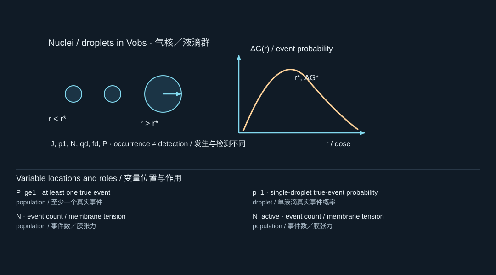
The diagram locates the physical system; its key lists the symbols in the formula. Read the definition in the surrounding derivation when a letter has different roles.
图示标出物理体系，图例列出公式中的符号。若某字母有多种作用，应以邻近推导中的定义为准。
This is the population transform in the source. [S1, p. 2]
这就是原始材料中的群体概率变换。[S1，第2页]
For example, with ,
例如，当 时，

The diagram locates the physical system; its key lists the symbols in the formula. Read the definition in the surrounding derivation when a letter has different roles.
图示标出物理体系，图例列出公式中的符号。若某字母有多种作用，应以邻近推导中的定义为准。
but
而
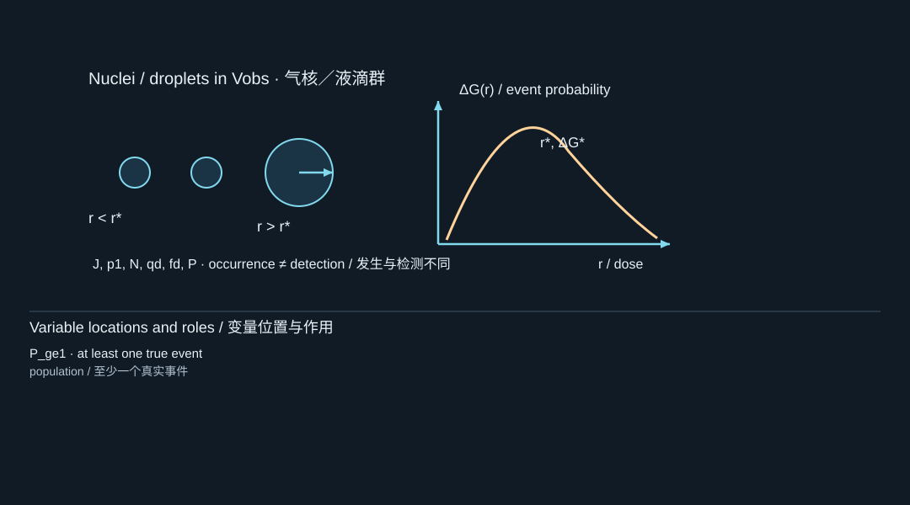
The diagram locates the physical system; its key lists the symbols in the formula. Read the definition in the surrounding derivation when a letter has different roles.
图示标出物理体系，图例列出公式中的符号。若某字母有多种作用，应以邻近推导中的定义为准。
The individual-droplet probability has not changed, yet the probability of observing at least one event has risen from to approximately . Consequently, an apparent experimental onset can shift simply because the number of available droplets changes.
单个液滴的概率并没有改变，但观察到至少一次事件的概率却从 上升到了约 。因此，仅仅改变可参与激活的液滴数量，就可能使实验中的表观起始点发生变化。
The inverse relation follows immediately:
其反演关系可以直接得到：
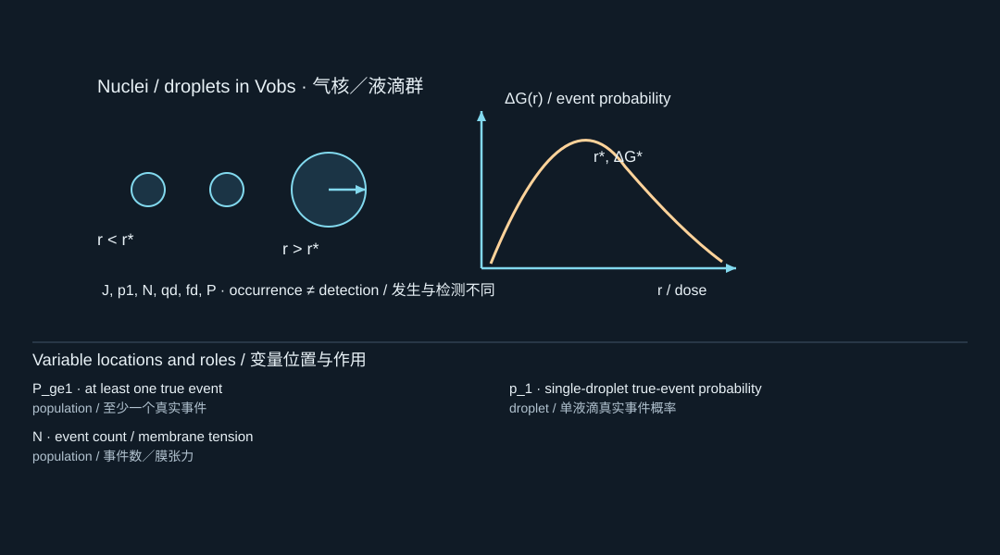
The diagram locates the physical system; its key lists the symbols in the formula. Read the definition in the surrounding derivation when a letter has different roles.
图示标出物理体系，图例列出公式中的符号。若某字母有多种作用，应以邻近推导中的定义为准。
so
因此
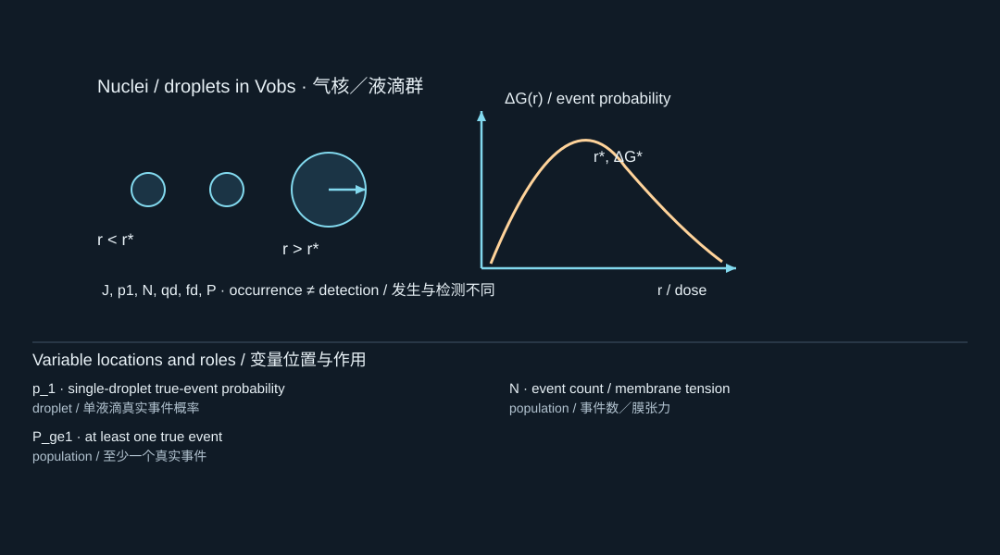
The diagram locates the physical system; its key lists the symbols in the formula. Read the definition in the surrounding derivation when a letter has different roles.
图示标出物理体系，图例列出公式中的符号。若某字母有多种作用，应以邻近推导中的定义为准。
This inversion depends on the assumed known count and independent, equal-probability event model.
这一反演依赖于以下假设：液滴数量已知，各事件相互独立，且具有相同的发生概率。
2.3 Adding the detector
加入探测器模型
Now let be the probability that a real single-droplet event is detected, and the false-event probability per observation.
现在，令 表示真实单液滴事件被探测到的概率， 表示每次观测出现假事件的概率。
For one droplet,
对于一个液滴，
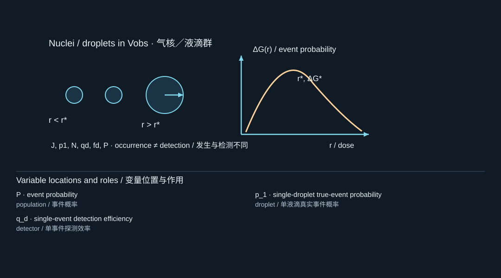
The diagram locates the physical system; its key lists the symbols in the formula. Read the definition in the surrounding derivation when a letter has different roles.
图示标出物理体系，图例列出公式中的符号。若某字母有多种作用，应以邻近推导中的定义为准。
The probability that none of the droplets produces a detected real event is
没有任何液滴产生被探测到的真实事件，其概率为
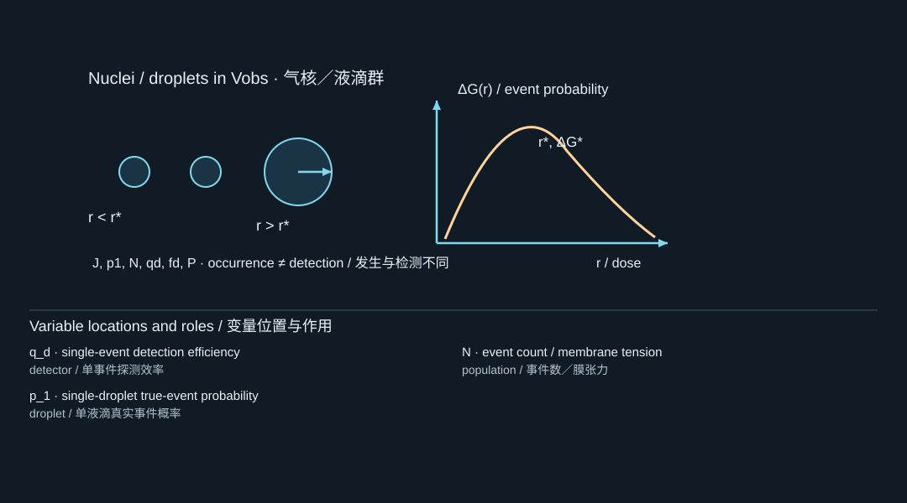
The diagram locates the physical system; its key lists the symbols in the formula. Read the definition in the surrounding derivation when a letter has different roles.
图示标出物理体系，图例列出公式中的符号。若某字母有多种作用，应以邻近推导中的定义为准。
Under the source’s independent false-event model, observing no event also requires no false event:
在原始材料采用的独立假事件模型下，未记录到事件还要求没有假事件发生：
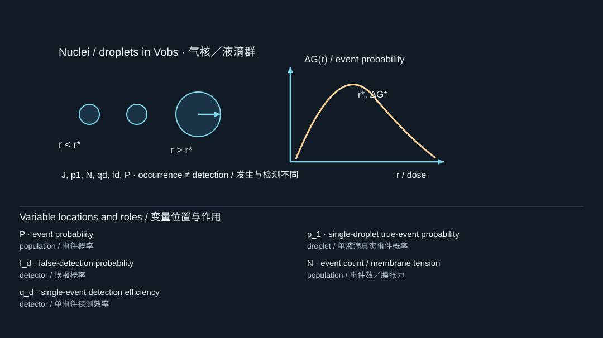
The diagram locates the physical system; its key lists the symbols in the formula. Read the definition in the surrounding derivation when a letter has different roles.
图示标出物理体系，图例列出公式中的符号。若某字母有多种作用，应以邻近推导中的定义为准。
Therefore,
因此

The diagram locates the physical system; its key lists the symbols in the formula. Read the definition in the surrounding derivation when a letter has different roles.
图示标出物理体系，图例列出公式中的符号。若某字母有多种作用，应以邻近推导中的定义为准。
or equivalently,
等价地，
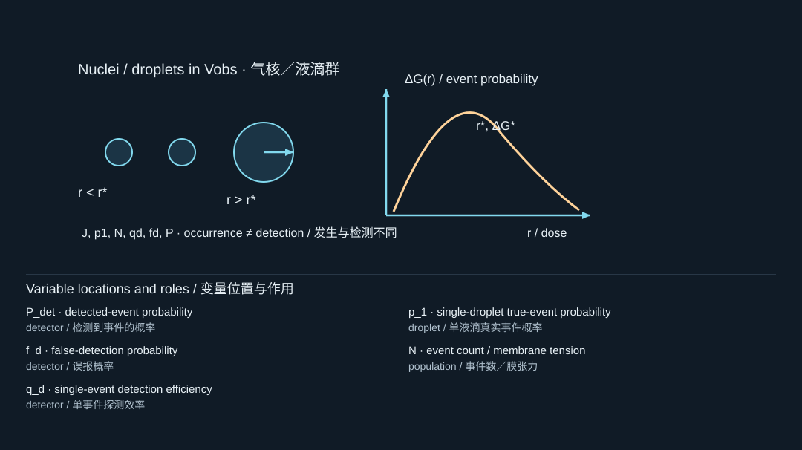
The diagram locates the physical system; its key lists the symbols in the formula. Read the definition in the surrounding derivation when a letter has different roles.
图示标出物理体系，图例列出公式中的符号。若某字母有多种作用，应以邻近推导中的定义为准。
This is why observed onset and underlying event probability are not interchangeable. [S1, p. 2]
这就是为什么观测到的起始点与底层事件概率不能混为一谈。[S1，第2页]
When , , and is known, inversion gives
当 、 且 已知时，反演得到
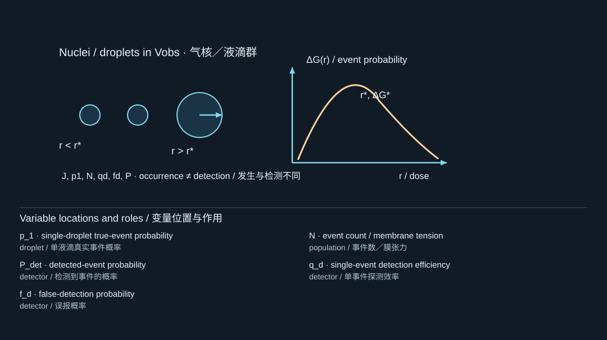
The diagram locates the physical system; its key lists the symbols in the formula. Read the definition in the surrounding derivation when a letter has different roles.
图示标出物理体系，图例列出公式中的符号。若某字母有多种作用，应以邻近推导中的定义为准。
The physical bounds imply
由物理取值范围 可得
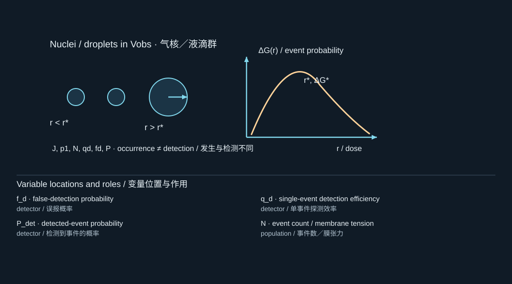
The diagram locates the physical system; its key lists the symbols in the formula. Read the definition in the surrounding derivation when a letter has different roles.
图示标出物理体系，图例列出公式中的符号。若某字母有多种作用，应以邻近推导中的定义为准。
A measured probability outside those bounds would be inconsistent with the chosen count and detector parameters.
如果测得的概率落在上述范围之外，就说明它与所采用的液滴数量及探测器参数不相容。
The output of Stage 2 is a conditioned event probability—not a universal fluence threshold and not a bubble-radius history. That is the explicit boundary of the second theory page. [S1, p. 2]
阶段2的输出是一个条件事件概率，而不是通用的能量面密度阈值，也不是气泡半径历程。 这正是第二个理论页面明确规定的结论边界。[S1，第2页]